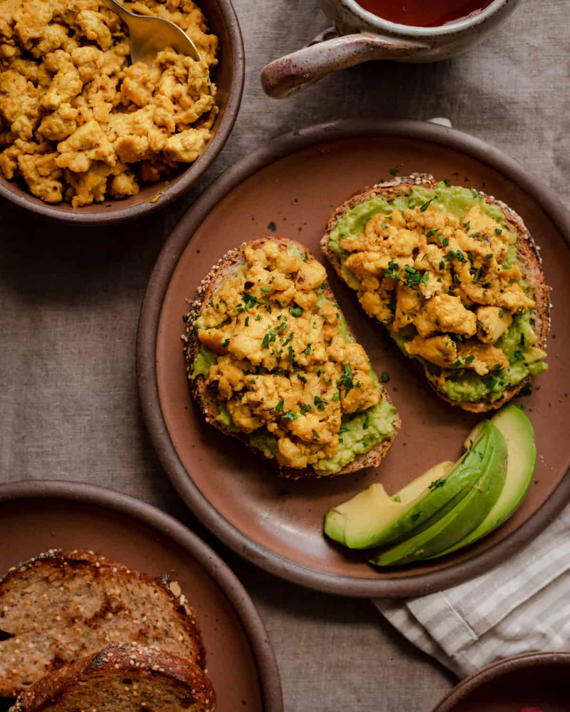

Tofu Scramble

The creamiest tofu scramble of your life, courtesy of Rainbow Plant Life
Ingredients
For this recipe, you will need:
- 1 14- or 16-ounce (400/454g) block of firm tofu
- 1/4 teaspoon ground turmeric
- 1/2 teaspoon garlic powder
- 1/2 teaspoon onion powder
- 1/4 teaspoon paprika
- 1/2 teaspoon chipotle chile flakes
- 1/2 teaspoon kala namak (AKA Indian black salt)
- Freshly cracked black pepper to taste
- 1 generous tablespoon tahini
- 2 tablespoons nutritional yeast
- 1/2 cup (120 mL) plant-based milk of choice
- 1 tablespoon olive oil or cooking oil of choice
- Sea salt or kosher salt to taste
Steps
- Drain the tofu. Line a cutting board with a few layers of paper towels or a clean dish towel. Place the tofu on top, then weigh it down with a heavy cookbook, or a large plate weighed down by a few cans of beans. Press the tofu for 15 minutes.
- Make the eggy sauce. In a bowl, whisk together the turmeric, garlic powder, onion powder, paprika, chipotle, kala namak, tahini, and nutritional yeast. Pour in the milk gradually and whisk until you have a nice sauce.
- Crumble the pressed tofu with your hands into chunks, not too big or too small.
- Heat a large nonstick frying pan over medium-high heat with the oil. Once the oil is hot, add the tofu to the pan, and fry until it’s lightly browned, 5 to 7 minutes. Stir occasionally but not too often to allow the exterior to get lightly browned. Break up any large chunks of tofu with your spatula but don’t break it up too finely.
- Add the eggy sauce and fold to combine, using a silicone spatula to coat each piece of tofu with the sauce. Continue frying the tofu until you reach your desired texture and consistency. If you prefer your scramble on the dry side, cook for a few minutes. If you prefer it on the wet side, cook for just 30-60 seconds (I prefer slightly drier for a breakfast burrito).
- Finish the scramble with a few shakes of kala namak. Taste, and add a pinch of kosher salt or sea salt as needed. Reheat leftovers in a frying pan or in the microwave.